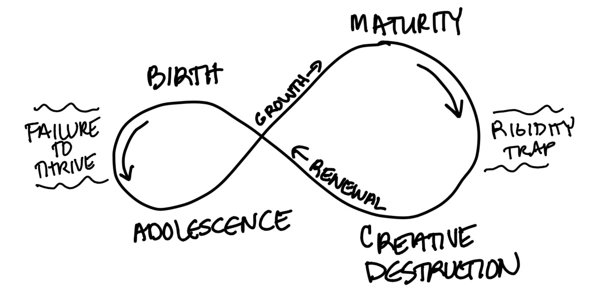

Impromptu Networking
Structure 1
Reavel the whole picture, theh forest AND the trees
Answer this question in pairs:
"What mechanism you like the best at the Plus Team?"
Share with the group
Example: Roadmap Transparancy Meeting (RTM)
Now we have input for the next structure
List of useful mechanisms
What, So What, Now What? W³
Structure 2
Pause
Ask: Continue with another example?
Problem: the team struggles in identifying the most impactful work
Solution: Ecocycle Planning
Speakers notes go here.

(what) Analyze the Full Portfolio of Activities and Relationships to Identify Obstacles and Opportunities for Progress
(how) visualize mechanisms on a maturity graph
Speakers notes go here.
5 minute meeting
Speakers notes go here.
Pause
Ask: Continue deep dive of the mechanism?
An Ethical Mechanism
What? a process who have the following charactaristics:
Known goals
Increases the impact of the solution due to more inputs
Come to the solution quicker than other mechanisms
Removes unconcious biases
Transparent
Liberating Structures
(What and why) Mechanism for unleashing innovation
Speakers notes go here.
(how) By finding solutions
Speakers notes go here.
and leveraging everyone's strengths
Speakers notes go here.
while having fun
Speakers notes go here.
example:
Speakers notes go here.
Problem: the team struggles in identifying the most impactful work
Speakers notes go here.
Solution: Ecocycle Planning
Speakers notes go here.
(what) Analyze the Full Portfolio of Activities and Relationships to Identify Obstacles and Opportunities for Progress
(how) visualize mechanisms on a maturity graph
Speakers notes go here.
5 minute meeting
Speakers notes go here.